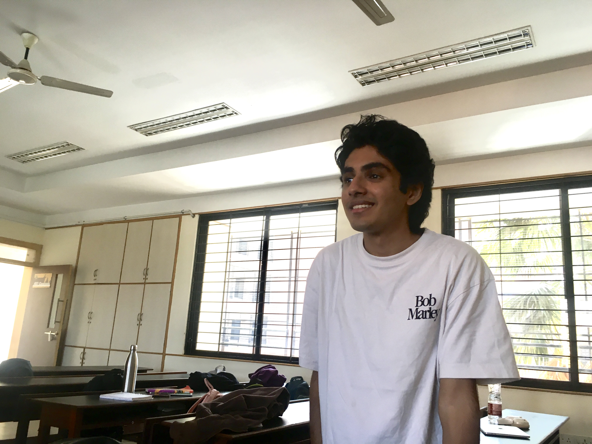

Previous / next slide. Space and Page Up / Down work too.
Jump to the first / last slide.
Toggle fullscreen — best for presenting.
On touch screens, swipe left or right.
Move over the passport cards to tilt them. Source links open in a new tab.
Reopen this guide at any time.
Reliability-constrained energy flexibility for Indian data centres
INDIAN DC CAPACITY 1.5 GW → 6.5 GW · 2025–2030
Proteus · PES University
Owns the live demo end to end — turning a flexibility decision into a real action and proving it worked. Cares about data-centre reliability because a recommendation nobody can verify is one nobody will trust.
Built the logic that decides what can safely be shifted, and when. Believes flexibility only counts if it respects the real limits of the facility — reliability comes first.

Wired up the data feeding the passport and the engine that tracks the system's live state. Data-centre reliability matters to him because good decisions start with trustworthy inputs.
GW of data-centre capacity, 2025 → 2030
2025 → 2030 — projected to more than double
billion litres, 2025 → 2030 — also more than doubling
Every new megawatt lands on a grid already stressing reliability, water and storage. Operators own the batteries, cooling and compute to help — but have no defensible way to turn live conditions into a safe, time-bound commitment.
A battery action that pays at the peak erodes state-of-charge headroom and raises tail outage risk.
Demand-response models flatten the electrical, thermal and computational coupling inside a live facility.
What reduction, duration, ramp and recovery can one facility safely promise? Still an open question.
Reduce grid draw by X kW for Y minutes at Z ramp — without crossing the reserve.
…while keeping enough thermal, electrical and operational reserve to satisfy the facility's reliability policy if a utility disturbance occurs.
Each subsystem is optimised alone. Nobody owns the joint answer.
An AI surge becomes heat; cooling answers on a different timescale. Safe in server-power terms, binding in thermal terms.
Pre-cooling buys short-duration flexibility — then thermal recovery reshapes the battery requirement and later load.
A tariff peak, outage alert or utility request changes what flexibility is worth. Uptime still needs a believable response.
UPS/BESS can shave a peak or smooth a ramp — but every discharge shrinks the buffer if the grid fails before recharge.
The decision layer that issues your facility's flexibility commitment.
TELEMETRY IN → SAFE ENVELOPE → TIME-BOUND COMMITMENT → VERIFIED DELIVERY
Load, criticality, cooling, UPS/BESS and generator state.
The largest safe envelope under current constraints.
Pre-cool, defer batch jobs, pause charging, discharge only above reserve.
Any plan that breaches reserve, battery, temperature, water or criticality limits.
Delivered vs promised: kW, duration, minimum SOC, recovery.
↑ Step 04 is why reliability stays non-negotiable. Read-only first · bounded commands later · facility policy always authoritative.
Size, time and ramp are capped.
Confidence-rated; contracts on bad inputs.
Delivered vs promised, after every event.
Compares promised vs delivered; records the minimum reserve actually held.
Time-bound plan + audit trail. Pilot: read-only, or bounded operator-approved commands.
Finds the largest load reduction that satisfies ALL hard constraints. Flexibility is conditional — never a fixed battery-size number.
Telemetry becomes state. Hard limits: reserve · thermal · hydraulic · battery · criticality · recovery.
Grid and rack power, criticality, UPS/BESS SOC, generator, cooling flows, weather, water, tariff signals.
OUTPUT ≠ “USE THE BATTERY”. OUTPUT = A PORTFOLIO ACROSS COMPUTE · COOLING · STORAGE.
The engine solves against constraints that are estimated, not measured. A facility knows its temperature — not how fast the hall heats if cooling backs off for twelve minutes. Five learned models close those gaps.
Learned surrogate: hall conditions, IT load, setpoints and ambient → a 5–30 min temperature trajectory. Sets pre-cooling headroom without per-site physics calibration.
AI workloads step, they don't curve. Quantile regression sizes the commitment on the upper quantile and sources the Passport's CONFIDENCE field.
Nameplate and SOC overstate what a battery delivers. Regression on discharge history estimates energy above reserve — overestimating is what erodes it.
Most facilities keep no criticality register. Telemetry classifies jobs as deferrable, throttleable or protected; operator overrides become training signal.
A language model writes the justification for every recommendation and blocked action: what was proposed, which constraint bound, what would unlock more.
Confidence is an input to the envelope, not a footnote. Stale telemetry, out-of-distribution models or high forecast variance contract it automatically.
EcoStruxure IT Advisor is already a vendor-agnostic DCIM and digital-twin platform for power, cooling, environmental and asset data.
The Passport consumes that telemetry and asset model. It does not rebuild the monitoring stack.
The problem narrows to one decision: “What may the whole facility safely promise right now?”
Does not replace EcoStruxure, a BMS or hard electrical protection — they stay the control layer and system of record.
Does not require live utility-market integration. First value is operational: peaks, diesel, storage use.
Does not autonomously override critical protection. The facility's reliability policy stays authoritative.
A 3D twin explains it; a live simulation is the evidence — synthetic data, random outages, a hard reserve constraint.
Live load, cooling, reserve
Envelope computed
Every lever visible
Overdraws the BESS
Passport survives; naive runs short
Envelope shrinks
Shown with its reason
Promised vs delivered
Never violates the chosen reserve/SLA in defined outage scenarios.
Meaningful peak reduction in defined normal scenarios.
Every action shows its contribution and a constraint reason.
Promised vs delivered flexibility and reserve, after every event.
The whole concept understood from a short 3D event replay.
Lower exposure where tariffs reward lower maximum demand.
Stored energy and flexible load replace generator runs in non-outage events.
A credible commitment unlocks future demand response — upside, not a pilot dependency.
Flexibility that over-conservatism leaves untapped becomes usable — a hypothesis the pilot tests.
Peak and diesel reductions cut grid draw in stressed hours; water and thermal limits live inside the envelope.
Load falls without silently eroding uptime; an action log shows who contributed and why something was blocked.
Every commitment is time-bound and tied to a reliability threshold; promised vs delivered is always recorded.
Quantified ROI is a pilot output, not an assumption — measured on tariff, diesel cost, load profile, battery policy and baseline.
Not another battery. Not another dashboard — proof of when electrical, thermal and computational buffers can be used together without crossing a reliability threshold.